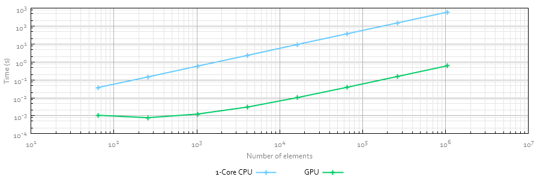

Implementation
The implementation is designed to be applied in distributed implementations of the SAC-SMA as well as the using of a distributed conceptualization to be used in hydraulic models such as RiverFlow2D gpu.
Tests made on nVidia Titan Black show that it is possible to reduce in more than two orders of magnitude the computational effort required to compute it compared against Intel Xeon gpu E5-287W v2 @ 3.40 GHz. Note that The gpu code is fully oriented to nVidia gpus using the nVidia's CUDA SDK.
About
Initial development of gpu-SAC is product of a research stay by A. Lacasta under the supervision of P. Restrepo at North Central River Forecast Center at NOAA. This stay was funded by the Spanish Ministry of Economy and Competitiveness under the grant EEBB-I-15-10317
Liscense
gpu-SAC is an OSS licensed under MIT License
Credits
Background image is propierty of Clint Losee. SAC-SMA scheme is used from UC Irvine. This site also uses Twitter Bootstra, jQuery and One Page Scroll